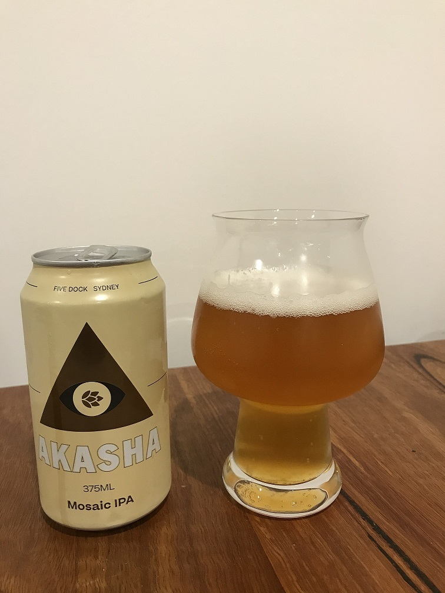
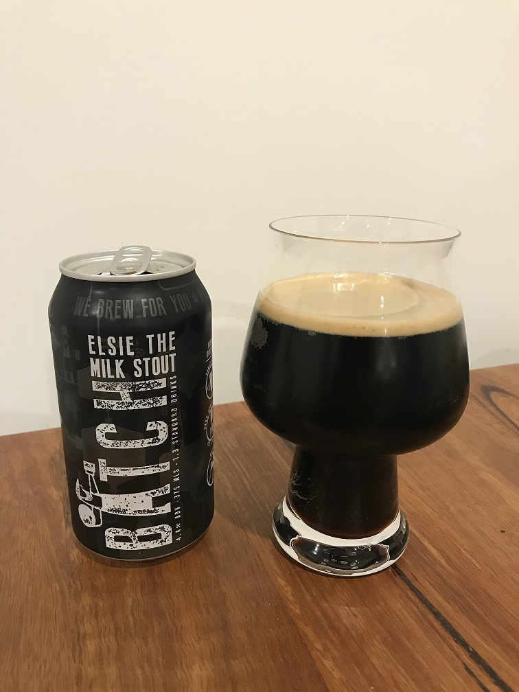

Akasha- Mosaic IPA
Mid Bitternes and light malt flavour gives this beer a nice mouth feel. Strong rock melon notes come through from the mosaic hops, I'm guessing a fair amount of dry hops used.
High in alchohol at 6.8% ABV which makes it hard to have more than one.
Block 'n Tackle- Scud XPA
This XPA is very aproachable with a hop forward profile. Low bitterness at 29 IBUs which makes it quite sessionable. I get passionfruit on the nose ofthis one.

Batch- Elsie the Milk Stout
This stout is deliscious! It has a very smooth and creamy feel to it, with chocolate and coffee notes. Very low bitterness makes this beer perfect for a winters night.
Bent Spoke- Crankshaft IPA
This IPA is huge! A punch in the face of hops which mixes with a relatively high bitteress to balance nicely. Big citrus flavours from the
citra hops used in it. I love this beer.
Six String- Dark Red IPA
Hop forward, visually attractive red IPA with relatively high bitterness, sitting at 51 IBUs. This bitterness is balanced well with the malt selection, featuring chocolate and caramel notes. this
is a higher gravity beer with an ABV of 6%.

Amet varius aliquam
Aenean ornare velit lacus, ac varius enim lorem ullamcorper dolore. Proin aliquam facilisis ante interdum. Sed nulla amet lorem feugiat tempus aliquam.